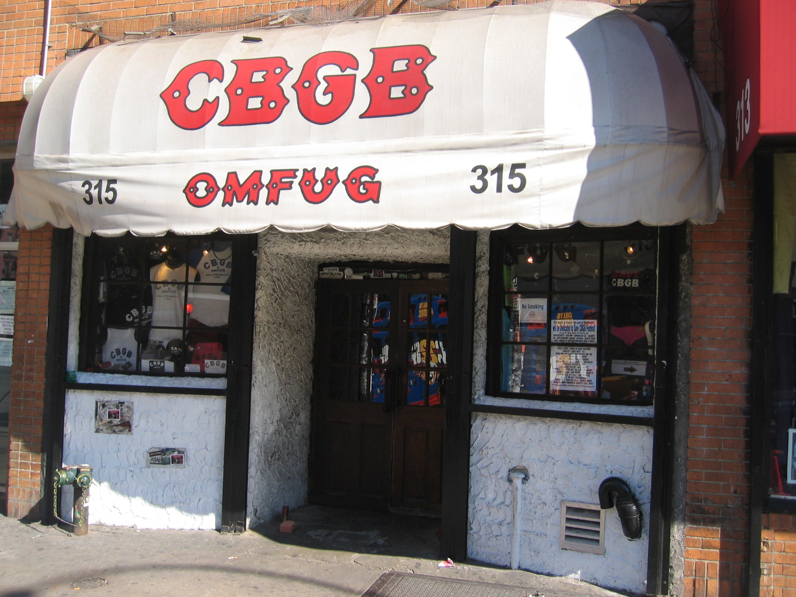
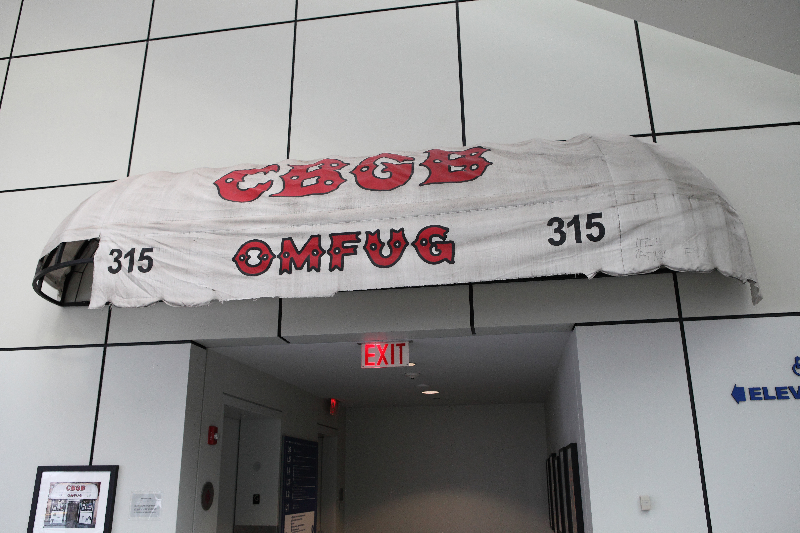
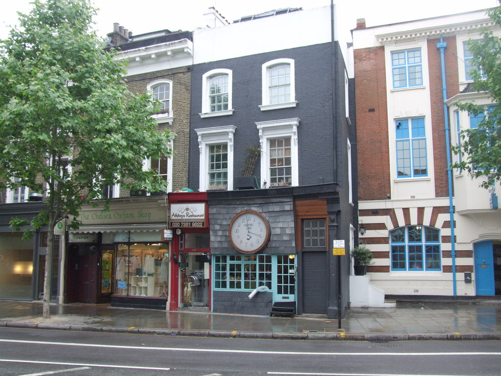
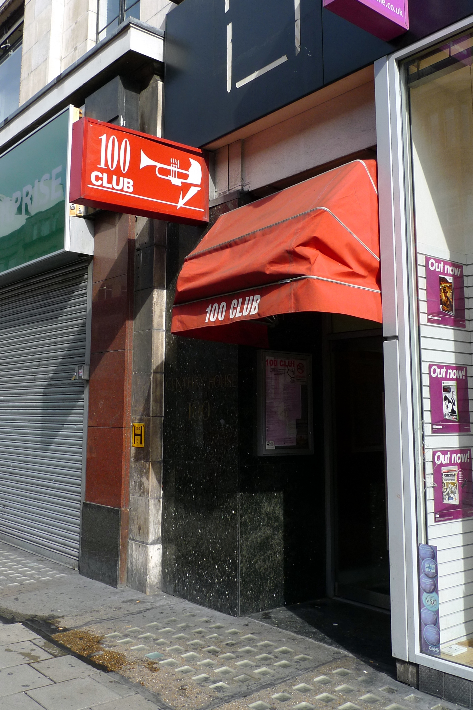
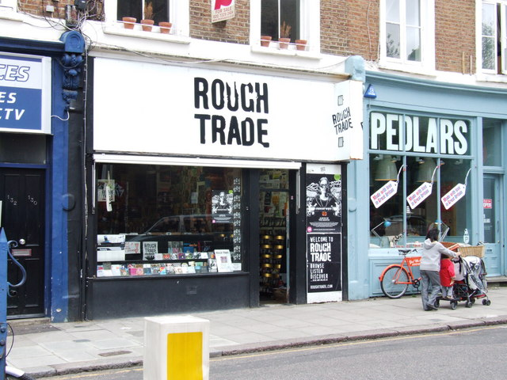

Tuesday · Music
(c. 1974–1978): short songs, small rooms, a fight with the 1970s
After the long songs and large rooms of the early 1970s, New York and London — overlapping years, different class politics — brought the track back to two minutes. , , and a few small clubs did the work. The press called it .

{kind=link}
“” is a press and fan word, not a union card. New York and London made short, loud records in overlapping years. They were not copies of each other, and they did not share a committee. , , , , and late-1970s Tokyo were contemporaneous rooms, not a required pairing. , , and the are precursors — loud, short, ugly records before the word stuck. This lesson stops at the first wave. and are named as the next rooms, not taught. 1970s band photographs are usually still in copyright, so the pictures here are venue exteriors and one museum object, all later than 1978 and captioned as such. Where a free picture could not be found, the lesson does without. No AI people.
Select any words, or tap a dotted term.
- 1973–74 Rooms and precursors opens at , 10 December 1973. The have already issued a debut (1973). In London, and restyle as in 1974. is filling British pubs with short R&B. These are feeders and precursors, not yet the word “.”
- 1975 Horses / first Pistols gig ’s (, 10 November). are a regular. The play their first gig at , 6 November. New York’s is a fact of the streets around the ; Britain is in recession.
- 1976 Records, fanzines, Grundy (, 23 April). issue “” on in (September). starts (July). The , Oxford Street, 20–21 September. ’s “” (, 22 October). “” (, 26 November). ’s interview, , 1 December.
- 1977 Majors, bans, Bollocks drops the in January; signs and drops them in one week in March; signs in May. “” (27 May). (, 8 April). ’s (February). , “” (September). (, 28 October) enters the UK Albums Chart at number one. ’s (December).
- 1978–79 The first wave burns out ’ last gig of the original run: , San Francisco, 14 January 1978. The group splits. dies in October 1978; dies in February 1979. gigs at in from July 1978. and are already opening other rooms. They are the after, not this lesson.
Before
Stadiums, solos, and a hangover from the 1960s
The years had left rock with longer songs, larger crowds, and a business that billed the LP as the work. By the early 1970s that habit had hardened. sold a night in a football ground. Guitar solos ran past the length of a 1964 single. treated a side of an album as a suite. put the costume back on the . None of that was a crime. It was a job, and it paid. It was also what a younger crowd in small rooms would refuse: the distance from the stage, the time on the clock, the idea that musicianship meant more notes. The had been a 45 rpm export. Ten years later the same industry was selling duration.
The refusal had economics under it, not only taste. Britain in the mid-1970s was in recession. Unemployment, especially among the young, was a newspaper fact, not a lyricist’s metaphor. The loan of 1976 is the official marker; the dole queue was the local one. New York City’s in 1975 put the and the rest of a nearly bankrupt city in the same shot: empty lots, a city government bargaining with Washington, a downtown that landlords had not yet renamed. People who write about like to make those facts a soundtrack. Treat them as weather. The records came from rooms that were cheap because the neighbourhoods were cheap.
Britain already had a feeder that was not . , in the first half of the 1970s, put short rhythm-and-blues back into rooms that held a few hundred people. , from , were the usual example: guitar, a suit, a set that did not wander. ’s were another. The point was a small stage and a song that ended. did not call itself . It trained players and audiences for a shorter night, and some of those people — Strummer among them — walked into the next rooms when those rooms opened.
A few older American records had already been loud, short, and ugly. The ’s (1969) was a live Detroit album that did not behave like a studio photograph. , with , issued the same year and in 1973. The ’ debut (1973) was from the wrong side of the river: makeup, riffs, songs that did not last. Later writers filed all three as “.” In 1969–73 they were not a movement with that name. They were precursors. The useful fact is the method — volume, brevity, a refusal of polish — sitting on the shelf before awning meant anything to a weekly paper.
The era
Two cities, overlapping years, different class politics
Do not start with London copying New York, or New York copying London. The years overlap. The class politics do not. In New York the room that mattered was a bar whose owner had wanted country, bluegrass, and blues. In London the headquarters was a clothes shop on the , and the explosion was a live interview. Both cities made two-minute songs. They were not one scene with two addresses.
opened on 10 December 1973 at , in a part of Manhattan that the city’s 1975 did not spare. The letters stood for Country, Bluegrass, Blues. What he got, once ’s and talked their way onto the stage with original songs, was a circuit. , four men from in leather jackets, played the room as a method: , , no guitar solo, a set you could time with a kitchen clock. , already a poet, made with and a band, produced by , and issued it on on 10 November 1975. — and — and used the same small stage for pop and art-school nervousness that the later word “” would try to separate. left , wrote “,” and took the ripped shirt onto a New York stage before London made a fashion of it. , out of the , formed and later took that band to London. , on Park Avenue South, booked overlapping bills. The New York fact is a few rooms, a few dozen people, and records that and were willing to tape. It is not a proletarian uprising. Many of the players had art-school or poetry credentials. The supplied the rent, not a manifesto.

.jpg){kind=link}
London’s 1976 was a different argument. had already been around the as a would-be manager. With he ran a shop at that, from 1974, traded as : fetish clothing, T-shirts that were meant to offend, clothes as a fight with hippie costume and with leftovers. The — billed as , , , — formed out of that counter. Their first gig was 6 November 1975 at . They were a band. They were also a media object almost immediately. signed them. “” appeared as a 45 on 26 November 1976. Five days later, on 1 December, they went on ’s as last-minute replacements for . goaded them; swore; the tabloids the next morning had a story they could print. The ’s “” is the headline everyone remembers. The that December lost most of its dates. was suspended. were a national name before they had an album. That is not a New York story. It is a British and newspaper story, riding a year of unemployment and an loan, in which a working-class (and art-school) noise became a moral panic in a week.

, at 100 Oxford Street, was already a jazz basement when it became a address. On 20 and 21 September 1976, the — booked with and the promoter — put the , , , , and (their first public set) on a two-night bill. A thrown glass during ’s set blinded a young woman in one eye. , not yet ’ bass player, was arrested. Violence at these shows was a real injury, not a romance, and it gave councils and venue owners a reason to cancel. The same autumn, ’s , started in July 1976, showed how a scene could print itself: felt-tip, photocopy, a that told you which pub to go to. here is not a slogan. It is a stapler and a shop that would take twenty copies.

{kind=link}
The field
Short songs, small labels, and three ways to be in the fight
A gallery of three faces is the wrong picture. Name the field, then slow down. , , , , , , , and . In London and Manchester: the , , , , , and , , . McLaren and Westwood. . . at . . at , a shop in 1976 and a label from 1978. Women were not a subplot: Smith, Harry, , , , . Clothes were an argument — Westwood’s bondage trousers, Hell’s ripped shirt, safety pins as hardware — not a Halloween costume. made 45s when the majors were late or frightened. Violence at gigs was a booking problem. ’s , in December 1977, is already the edge of : short songs, but the next room’s grammar. That is a crowd on purpose.
are a method. The debut album, recorded with at and released by on 23 April 1976, holds fourteen songs in about twenty-nine minutes. played with and did not take a solo. sang as if the words were a count-in. wrote a lot of the songs; kept time and produced in the early stretch. “” is two minutes and a chant. The leather jackets were a uniform, which is a method too: you could copy it without a conservatory. What you could not fake without playing it was the speed. Later bands treated that as a rulebook. In 1976 it was four people in a bar refusing the long solo as a job.
The are a media event as much as a band. The records exist, and they are short: “,” “,” “,” “,” then in October 1977. The career around them is a sequence of institutions losing their nerve. signed and, after , dropped them in January 1977. signed them in March and dropped them in a week. , ’s label, took the contract in May. “” came out in Jubilee week; the BBC did not playlist it; it still sold. replaced Matlock on bass in early 1977 and could barely play; he was, by then, part of the picture the papers wanted. ’s ransom-note graphics did the same job the clothes did: a fight you could photocopy. Listen to the album. Then read the cuttings. Neither is a footnote to the other.
are the political argument inside , not the only politics and not a pure one. came from . and had been around the early London groups that never quite existed. They signed to , a major, and spent a lot of “” complaining about it. The debut album, , appeared in the United Kingdom on 8 April 1977. “,” the first single, was written after the 1976 clashes: white British punks watching Black Londoners fight the police and wanting a riot of their own. That is an awkward sentence on purpose. The band were more interested in reggae, in the dole, and in the idea that a three-minute song could name an enemy, than were. They were also a rock group with a catalogue number. Treat the politics as a real quarrel inside the scene — Strummer’s slogans against ’s refusal — and not as a halo.

The rest of the field is not a supporting cast. got the first UK 45 out: “,” , 22 October 1976, a week before “Anarchy.” , from Manchester, treated the short song as pop — and, at the start, — and by September 1978 were on . ’s (February 1977) is a record that allows a guitar to run, which is why it sits awkwardly in any list that thinks only means two chords. , from London, made at the end of 1977: twenty-one tracks, most of them brief, already looking at the next room. of shouted “” in 1977 as a refusal of the same 1970s, from a different mouth. formed in 1976; their first album is 1979, which is why this lesson names the band and not the LP. , with , took rockabilly and a New York stage and did not ask permission. ’s remains the New York document that is a book as well as a record. Name them because they were there, not because a syllabus needed a balance.
Elsewhere
The same years, not a ranking of cities
In , recorded “” in 1976 and issued it themselves on in September, with and , because no Australian major wanted it. Copies went to British music papers. called it single of the week. in London signed them. The 45 is earlier than “” and “Anarchy.” That is a date, not a trophy. under was a police town; were not a boutique band, and they did not take kindly to being told to look like one when they reached England in 1977. In , were playing a related short, loud set, closer to than to McLaren, and issued in 1977. Australia was not waiting to be notified.
In and , a Midwestern circuit had been making difficult records before the British tabloids discovered the word. lasted long enough in 1974–75 to split into and . went to . stayed stranger. , from , were art-school Ohio in the same years; is 1978. None of this is London exported to the lakes. It is a set of American rooms that used some of the same older records — , Velvets — and did not need a interview to exist.
In Japan, the calendar runs a little later, which is why it belongs here as contemporaneous and not as a twin. formed in in 1977 with the stated aim of playing faster than ; their records came out after the fact. In Tokyo, from July 1978, the musician and promoter ran Sunday gigs at his studio under the name — , , among them — and , which had opened in October 1976, was one of the live rooms. A live compilation followed in 1979. That is the end-edge of this lesson’s years, a local circuit hearing imported 45s and answering in Japanese rooms. It is not an assigned Asian verse to make the map look fair.
After
1978–79: the first wave ends, other rooms open
The ’ last concert of the original run was at the in San Francisco on 14 January 1978, a room, far larger than or . was barely playing. ended the night with a question — “Ever get the feeling you’ve been cheated?” — and left. The group split. died in New York in October 1978. Vicious died in February 1979. Those dates are the burnout of one band and one press story, not a moral. By then the first-wave rooms were already emptying or turning over. What opened next were other rooms with other names: , which kept the shortness and changed the harmony and the rhythm; and , which kept the shortness and raised the speed. were already on that hinge. This lesson does not teach those eras. It only notes that 1974–78 was a fight with the 1970s, and that the fight did not end when did. It moved.
A question
A question to keep asking
If a two-minute song in a small room is a refusal of stadiums and solos, who still owns that refusal once the tabloids, the majors, and the uniform arrive?
Fun fact
The album went to number one while a shop was in court for the sleeve
released in the United Kingdom on 28 October 1977. On the Official Albums Chart dated 12 November it entered at number one, and it held the top place the following week. While it sat there, police in Nottingham charged the manager of ’s local shop under the for displaying the sleeve in the window. hired the barrister . On 24 November 1977, Nottingham magistrates acquitted the manager. The court was told that “” could mean nonsense. The record stayed in the shops. The useful fact is the overlap: a number-one LP and a Victorian indecency statute in the same fortnight, and the statute lost.